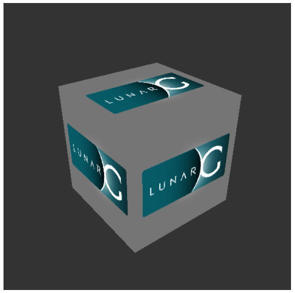

Linux
对于Linux平台的配置，我们使用Ubuntu作为演示，其它Linux平台的配置方法应该是类似的。我们使用二进制包来安装Vulkan SDK，使用GCC 4.8以上版本作为编译器，使用CMake和make作为构建系统。
Vulkan SDK
Vulkan SDK是使用Vulkan开发应用程序必不可少的组件。它包含了Vulkan API的头文件，一个校验层实现，调试工具和Vulkan函数加载器。Vulkan函数加载器类似OpenGL的GLEW可以在运行时查询驱动程序支持的Vulkan API函数。
Vulkan SDK可以从LunarG的网站上免费下载。

打开终端，调整当前目录到我们下载的Vulkan SDK安装文件所在目录，然后使用下面的代码运行它：
chmod +x vulkansdk-linux-x86_64-xxx.run
./vulkansdk-linux-x86_64-xxx.run
安装文件运行后会将Vulkan SDK的所有文件导出到当前目录的VulkanSDK文件夹中。我们可以自己将VulkanSDK文件夹移动到合适的位置。
Vulkan SDK的根目录有一个build_examples.sh脚本，执行它构建Vulkan SDK的示例程序需要我们安装XCB库，以及一些X窗口的开发文件，可以通过在终端运行下面的代码来安装这些所需的库：
sudo apt install libxcb1-dev xorg-dev
然后，我们就可以执行build_examples.sh了：
./build_examples.sh
如果编译成功，在./examples/build/下就会出现一个cube可执行文件，运行它，可以看到下面的画面：

如果没有看到，而是出现了一条错误消息，可以尝试更新显卡的驱动程序到最新版本，再次尝试，如果仍然出现错误消息，可以在显卡官网查询自己的显卡是否支持Vukan。
GLFW
之前提到，Vulkan是一个平台无关的图形API，它没有包含任何用于创建窗口的功能。为了跨平台和避免陷入X11的窗口细节中去，我们使用GLFW库来完成窗口相关操作，GLFW库支持Windows，Linux和MacOS。当然，还有其它一些库可以完成类似功能，比如SDL。但除了窗口相关处理，GLFW库对于Vulkan的使用还有其它一些优点。
这里，由于Vulkan需要较新版本的GLFW才能支持。所以，我们使用源代码来编译安装GLFW。读者可以从GLFW的官方网站免费下载到GLFW的最新源码包。下载完成后，我们将源码包解压，使用终端进入解压的源码所在的文件夹，执行下面的代码生成makefile文件，然后编译GLFW：
cmake .
make
可能会出现Could NOT find Vulkan的警告信息，可以放心地忽略掉它。编译完成后，使用下面的代码将GLFW安装到系统的库目录中：
sudo make install
GLM
和DirectX 12不同，Vulkan没有包含线性代数库，我们需要自己找一个。GLM就是一个我们需要的线性代数库，它经常和OpenGL一块使用。
GLM是一个只有头文件的库，我们只需要下载它的最新版，然后将它放在一个合适的位置，就可以通过包含头文件的方式使用它。
这里我们直接在终端使用下面的代码安装它：
sudo apt install libglm-dev
配置makefile文件
现在，我们已经安装完了所有的依赖项，可以开始配置应用程序的makefile，验证安装是否正确。
在一个合适的位置新建一个叫做VulkanTest的文件夹，然后在文件夹里创建包含下面代码的main.cpp源代码文件。
#define GLFW_INCLUDE_VULKAN
#include <GLFW/glfw3.h>
#define GLM_FORCE_RADIANS
#define GLM_FORCE_DEPTH_ZERO_TO_ONE
#include <glm/vec4.hpp>
#include <glm/mat4x4.hpp>
#include <iostream>
int main() {
glfwInit();
glfwWindowHint(GLFW_CLIENT_API, GLFW_NO_API);
GLFWwindow* window = glfwCreateWindow(800, 600, "Vulkan
window", nullptr, nullptr);
uint32_t extensionCount = 0;
vkEnumerateInstanceExtensionProperties(nullptr,
&extensionCount, nullptr);
std::cout << extensionCount << " extensions supported" << std::endl;
glm::mat4 matrix;
glm::vec4 vec;
auto test = matrix * vec;
while(!glfwWindowShouldClose(window)) {
glfwPollEvents();
}
glfwDestroyWindow(window);
glfwTerminate();
return 0;
}
源代码的内容暂时不需要理解，我们现在只是为了验证我们的依赖是否配置正确，源代码的内容，我们会在后面的章节详细说明。
接着，我们需要编写makefile来编译源代码。这里假设读者具有一定makefile使用经验，知道makefile的变量和规则的用法。如果没有，也可以从本教程中快速学习这些知识。
我们首先定义一些变量来简化makefile编写。VULKAN_SDKPATH变量存放了Vulkan SDK的x86_64目录的位置：
VULKAN_SDK_PATH = /home/user/VulkanSDK/x.x.x.x/x86_64
读者应该替换上面代码的路径为自己Vulkan SDK的实际路径。接着，我们定义CFLAGS变量来指定编译选项：
CFLAGS = -std=c++11 -I$(VULKAN_SDK_PATH)/include
上面的代码表示使用C++ 11来编译源代码，将Vulkan SDK的包含目录加入编译器的包含目录搜索路径中。
然后，定义LDFLAGS变量来指定链接选项：
LDFLAGS = -L$(VULKAN_SDK_PATH)/lib `pkg-config --static --libs glfw3` -lvulkan
上面的代码将Vulkan SDK的库路径加入链接器的库搜索路径中，链接了Vulkan SDK的vulkan库，使用pkg-config命令取得了glfw静态链接选项。 现在可以开始定义编译VulkanTest的规则了：
VulkanTest: main.cpp
g++ $(CFLAGS) -o VulkanTest main.cpp $(LDFLAGS)
验证规则是否正确，可以将上面的代码保存为Makefile文件，然后使用终端在Makefile文件所在目录执行make命令。如果一切顺利，会生成一个VulkanTest可执行文件。
现在，我们定义另外两个规则，test和clean，前一个规则用于执行生成的可执行文件，后一个规则用于清除生成的可执行文件：
.PHONY: test clean
test: VulkanTest
./VulkanTest
clean:
rm -f VulkanTest
验证规则能否执行后，读者可能会发现make clean工作的非常好，但make test却产生了下面的错误信息：
./VulkanTest: error while loading shared libraries:
libvulkan.so.1: cannot open shared object file: No such file or directory
这是因为libvulkan.so没有被安装在系统的库目录，无法被VulkanTest加载。我们可以通过LD_LIBRARY_PATH环境变量显式指定库目录来解决这个问题：
test: VulkanTest
LD_LIBRARY_PATH=$(VULKAN_SDK_PATH)/lib ./VulkanTest
现在make test应该可以成功执行VulkanTest了。
test: VulkanTest
LD_LIBRARY_PATH=$(VULKAN_SDK_PATH)/lib\
VK_LAYER_PATH=$(VULKAN_SDK_PATH)/etc/explicit_layer.d\
./VulkanTest
至此，我们的Makefile文件已经编写完毕了，它的所有内容如下：
VULKAN_SDK_PATH = /home/user/VulkanSDK/x.x.x.x/x86_64
CFLAGS = -std=c++11 -I$(VULKAN_SDK_PATH)/include
LDFLAGS = -L$(VULKAN_SDK_PATH)/lib `pkg-config --static --libs glfw3` -lvulkan
VulkanTest: main.cpp
g++ $(CFLAGS) -o VulkanTest main.cpp $(LDFLAGS)
.PHONY: test clean
test: VulkanTest
LD_LIBRARY_PATH=$(VULKAN_SDK_PATH)/lib\
VK_LAYER_PATH=$(VULKAN_SDK_PATH)/etc/ex plicit_layer.d\
./VulkanTest
clean:
rm -f VulkanTest
读者可以将刚刚配置的Makefile文件作为一个模板在以后使用。
现在，让我们花点实践浏览下Vulkan SDK目录，在x86_64/bin目录下还有一个非常有用的程序：glslangValidator。它可以将GLSL代码编译为字节码。我们会在着色器模块章节，对它进行更为详细地说明。除此之外，Bin目录下还包含了Vulkan函数加载器和校验层的二进制文件，它们的库文件则位于Vulkan SDK的Lib目录下。
Vulkan SDK的Doc目录包含了Vulkan SDK的离线文档和完整的Vulkan规范文档。最后是Vulkan SDK的Include目录，它包含了Vulkan API的头文件。除此之外，还有很多文件和目录，但对于我们的教程来说，并没有直接用到它们，所以就不再一一介绍。
至此，我们已经做好开始Vulkan探险之旅的准备！